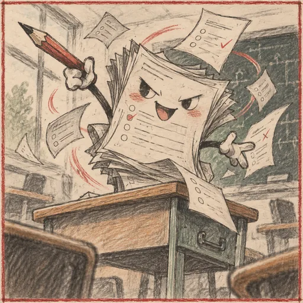

午休
休息
恢复专注上限的 25%。
预计恢复 10 点专注校园牌组构筑游戏
v0.0.4 · 第1层 · 高一
高一学年
由下向上前进 · 赭金色线可走 · 浅绿色线已走
触摸未解锁节点或悬停查看相连路线；点击亮起节点进入。
底部的起点均为上课，选择任意一条路线开始战斗。
宿舍节点
安静的宿舍里，时间只够完成1件事。
午休
恢复专注上限的 25%。
预计恢复 10 点专注挑灯修读
从当前牌组选择1张尚未升级的卡牌，强化至本次游戏结束。
已升级的卡牌会显示“+”错题订正
从当前牌组中选1张错题，永久移除。与休息、升级只能选择1项。
当前有0张错题。食堂货架
C部绿色A部红色B部蓝色无色
暴食
本次价格 150，每次暴食后价格 +75。
校园偶遇
高二 · 中途必经节点
一轮复习开始了
新学年 · 抉择，抉择
我我我我我我去我我我我我我靠，我还啥也没学呢怎么就高二了😭
操场节点
选择1项加成，效果持续到本次游戏结束。
跑步
最大专注增加 5。
当前专注不变。篮球
获得 1 点力量。
每点力量使每段攻击伤害 +1。羽毛球
获得 1 点敏捷。
每点敏捷使卡牌获得的防御 +1。造成6点压力

课堂挑战
请观察题型与敌人意图。
已完成 0% · 当前压力 +0
完成40%后可交卷。
试卷已经发下，先观察题型。
上课节点完成
将选择的卡牌永久加入本次牌组。
考试额外奖励
高一专属圣遗物
选择1项，只在本场战斗中生效。
第一层路线完成
你完成了本层期末考试。
卡牌选择
牌组管理
当前牌组
显示当前实际效果，已升级卡牌带有“+”。
游戏百科
卡牌选择
信息查看
战斗失败